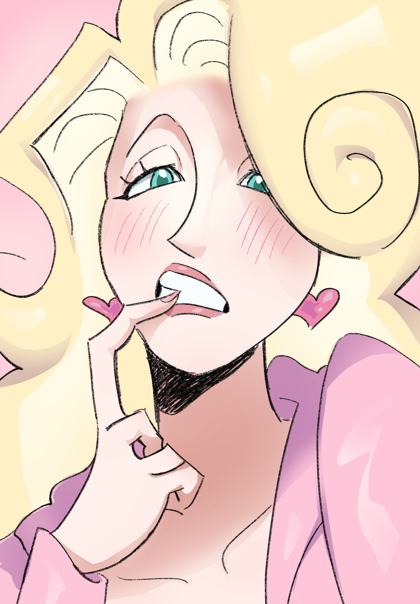
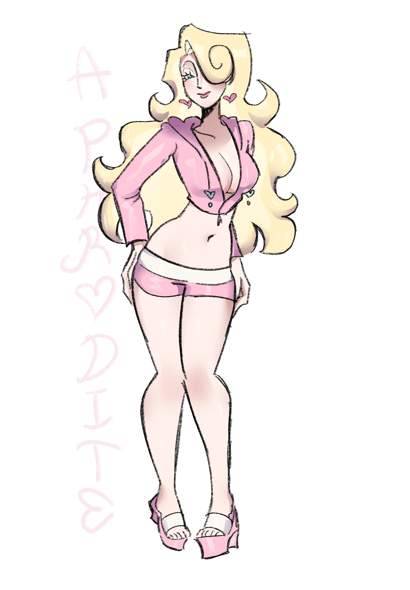

Information
อโฟรไดท์กำเนิดจากการที่ โครนัสได้ตัดอวัยวะเพศของยูเรนัสแล้วโยนลงทะเล ฟองผุดขึ้นมาจากน้ำ และเทพีอโฟรไดท์ก็ถือกำเนิดขึ้นมา
Myth
ซุสจัดงานเลี้ยงแต่ไม่ได้เชิญอีริส เทพีแห่งความขัดแย้ง เมื่ออีริสรู้ข่าว นางจึงวางแผนแก้แค้น อีริสจึงมางานเลี้ยงเอง และโยนแอปเปิลทองคำที่สลักคำว่า "สำหรับผู้ที่สวยที่สุด" เฮรา อโฟรไดท์ และอธีนา ต่างอ้างว่าแอปเปิลนั้นต้องเป็นของตน เพื่อยุติข้อพิพาท ซุสจึงเรียกปารีส เจ้าชายแห่งกรุงทรอย มาตัดสินว่าใครควรได้แอปเปิลนั้นไป เทพีแต่ละองค์มอบของขวัญล้ำค่าให้ปารีส เพื่อแลกกับการที่ถูกเลือกว่าสวยที่สุด อโฟรไดท์มอบความรักของเฮเลน มนุษย์ที่สวยที่สุด ให้กับปารีส ปารีสจึงมอบแอปเปิลให้แก่อโฟรไดท์ และเฮเลนก็ตกหลุมรักเขา อย่างไรก็ตาม เฮเลนได้แต่งงานกับพระเจ้าเมเนเลอัสกษัตริย์แห่งสปาร์ตาแล้ว เมื่อปารีสพาเฮเลนไปยังทรอย กษัตริย์จึงสาบานว่าจะตามหาเธอ และสงครามทรอยก็เริ่มต้นขึ้น